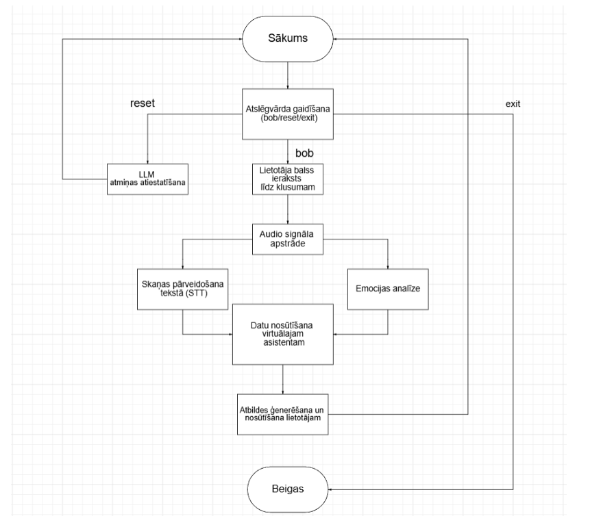

Speech Emotion Recognition Assistant
A locally running voice assistant that analyzes emotions in spoken language and adapts its responses based on the detected emotional context.
Overview
This project was developed as the practical part of my bachelor's thesis at Riga Technical University.
The goal was to investigate speech emotion recognition and integrate an emotion classification model into a local virtual assistant.
Instead of relying only on transcribed speech, the system also analyzes acoustic characteristics to estimate the user's emotional state.
Tech Stack
- Python — application development
- Scikit-learn — machine learning models
- Librosa — audio feature extraction
- NumPy & Pandas — data processing
- Vosk — voice command detection
- Whisper — speech-to-text transcription
- Ollama — local LLM execution
- Llama 3.1 8B — response generation
System Architecture

The application consists of independent Python modules responsible for audio capture, speech recognition, emotion classification, and response generation.
The voice assistant is activated using the wake word "Bob". After recording the user's request, audio is processed through two main components.
- Speech-to-text: Whisper converts recorded speech into text.
- Emotion recognition: An SVM classifier predicts emotions from acoustic features.
- Response generation: Ollama sends the transcribed text and emotional context to Llama 3.1.
- Conversation memory: Previous messages are maintained during the local session.
Additional voice commands allow the user to reset conversation history or exit the application.
Emotion Recognition
The emotion classification component analyzes acoustic properties of speech rather than relying exclusively on the meaning of spoken words.
Audio preprocessing includes noise reduction, normalization, filtering, and silence removal.
The processed signal is divided into overlapping segments, and features such as MFCC coefficients, pitch, energy, and spectral characteristics are extracted.
The classifier predicts four emotion categories:
- Happy
- Sad
- Angry
- Neutral
Predictions from individual segments are combined to estimate the dominant emotional state.
Model Comparison
Four traditional machine learning algorithms were evaluated: Support Vector Machine, Logistic Regression, Random Forest, and k-Nearest Neighbors.
The initial experiment used speech recordings from the RAVDESS dataset. SVM achieved the highest accuracy among the compared models and was selected for the assistant prototype.
- SVM: 79.61% accuracy
- Logistic Regression: 72.17%
- Random Forest: 71.28%
- kNN: 63.39%
Validation & Limitations
The prototype was also evaluated with 16 speech recordings collected from eight participants.
During testing, the initial model frequently predicted sadness for different speech inputs. The training dataset was subsequently expanded using SAVEE recordings to improve variation in real-world predictions.
In the separate evaluation on 16 participant recordings, the classifier correctly identified eight emotions, resulting in 50% accuracy.
These findings highlighted the gap between performance on controlled datasets and emotion recognition using unfamiliar voices in less controlled conditions.
Adaptive Assistant
The detected emotion is used as additional context when generating the assistant's response.
The system combines speech emotion predictions with the transcribed request. The language model can then adjust its communication style while preserving the meaning of the conversation.
The project also explored how responses differed when emotional context was provided compared with text-only interactions.
What I Learned
This project provided practical experience with modular Python applications, audio processing, machine learning pipelines, local model integration, and experimental validation.
One of the most important lessons was that successful experimental results do not automatically translate into reliable performance with unseen real-world data.
Source Code
The project is completed and preserved as an academic archive. Source code, setup instructions, and the machine learning implementation are available on GitHub.